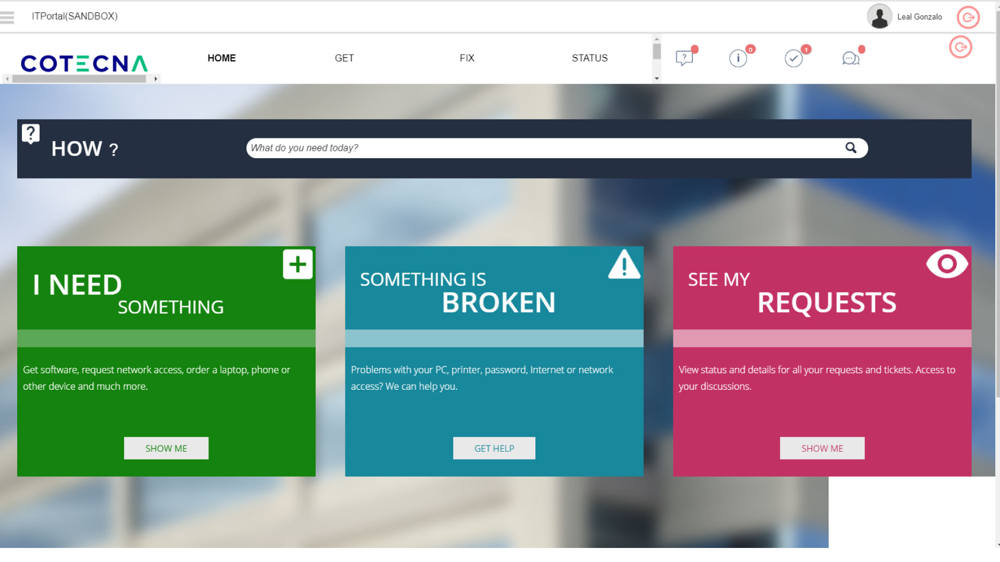

EasyVista Case study
For this case, It was necessary a redesign of the whole UI/UX of the solution Easyvista, an internal tool for incident ticket creation across the company.
The Problem
Initially there was no integration between the brand image and the platform. It was basically as it comes with the logo as the only company identifier. So a complete redesign was needed in order to adapt it to the company brand plus create an easier user flow for the task available on the platform.
Goals
To create a better understanding of the current functionalities the platform offers and to reduce the pain point of the user going to an extended amount of clicks to reach the goal: create an entry about an incident, something broke or need something for the work.
Constrains
This platform was not created to allow users or developers to fully integrate a brand image across the platform. It brings in a ‘code only’ form from where any developer could integrate code in the current page and not in one place as it would be in any project development. So for each screen a CSS/HTML code solution was the only way to properly integrate branding and functionality.
Process
With this only way to do the upgrade of the UI, I proceed to create blocks of code which could be used across the pages of the solution and it could be reduced to fewer classes so the controls of each section were assigned to a specific class or sub classes.
Requirements
There were no major requirements to redesign except for every code line integrated should last and stay clean after any platform update. As this scenario was not tested on older versions, the only solution was to document all the procedure and automate an UI code integration in one click via deployment where if any code was missed during upgrade it could be reestablished in an easy way.
Design
After a whole analysis of screens and steps to create an entry, it was possible to reduce all the middle screen and steps to take the user to a ‘one-click’ process where creating a ticket entry was no longer a process of 3 or 4 non logical screens. This is what end up being the final UI with the reduced steps